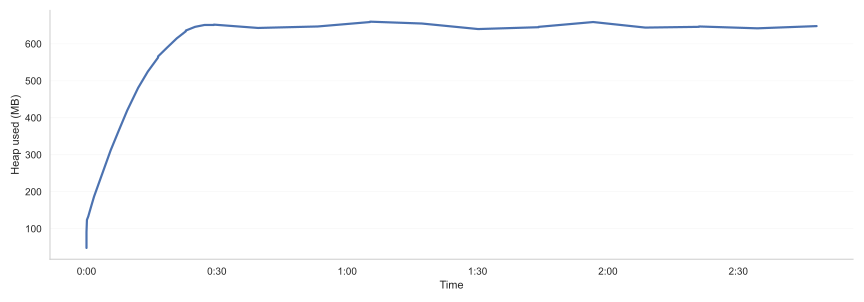
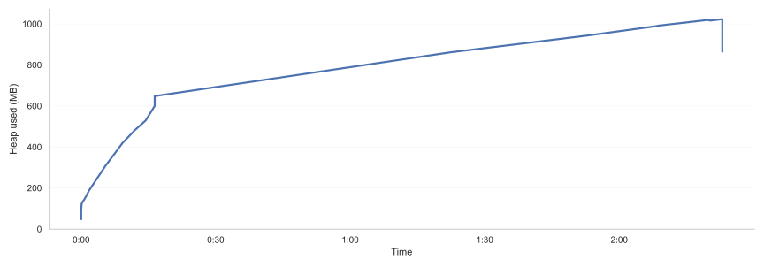
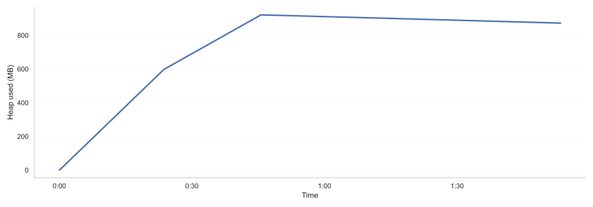

When the heap keeps growing, it’s not always a memory leak.
Seeing the heap grow in production is unsettling. The reflex is often immediate: “we probably have a memory leak.” Sometimes that’s true. Often, it’s not that simple.
A growing heap is a signal.
What matters is what kind of signal, and over what time horizon.
🧩 In production Java systems, heap growth usually falls into one (or more) of three broad patterns.
Each of them tells a very different story about the system.
#1 Warmup - growth as a normal phase of life
Heap growth during startup is often treated as a transient inconvenience.
In reality, it is frequently a designed phase of the system.
Modern Java applications rarely start “fully formed”. They warm up.
Caches populate.
Metadata loads.
Code paths become hot.
Lazy components are instantiated only when first needed.
In large business monoliths, this warmup can be intentionally stretched.
Architectural choices such as:
deferred initialization,
lazy-loading of heavy subsystems,
progressive cache filling,
staged activation of business features,
can push the system’s nominal memory plateau far beyond the first few minutes.
In some environments, reaching steady state can take tens of minutes — sometimes hours.
And that can be perfectly fine.
⚠️ The risk here is not technical. It’s organizational.
If the team responsible for operations is used to applications that stabilize in two or three minutes, handing them a system whose heap reaches its plateau after two hours is a recipe for misunderstanding.
Alerts fire.
Restarts happen.
“Well-intentioned” corrective actions are taken against a system that is behaving exactly as designed.
This is not a JVM problem.
It’s a shared understanding problem.
A warmup strategy only works if it is explicitly communicated to the teams who monitor and operate the system.

Scenario 1 — Warmup then plateau (healthy baseline).
The heap rises during startup as the system initializes, loads classes, builds internal structures, and warms caches.
Once steady-state traffic begins, usage stabilizes around a nominal level.
Small oscillations are expected: allocation bursts and young collections create normal “breathing” without any long-term upward drift.
#2 Retained objects - when memory stops being released
Not everything in memory is meant to be collected quickly.
Long-lived objects are a normal part of most systems:
active sessions,
reference data,
caches,
compiled expressions,
internal registries.
The presence of such objects does **not** indicate a leak.
The problem begins when objects that are functionally releasable are not released.
This distinction matters.
A memory leak in Java is rarely “an object that should not exist”.
It is more often:
an object that used to be relevant,
that has quietly outlived its usefulness,
because something is still referencing it.
The leak is frequently indirect.
The retained object may be small.
The structure holding onto it may look harmless.
The functional code may have already moved on.
From the outside, what you see is simple:
the heap grows, and never quite settles.
🧩 This is where many teams get stuck.
The JVM keeps running.
GC keeps working.
Nothing crashes immediately.
So the system is given more memory.
Or restarted periodically.
Both actions reduce pressure — without restoring understanding.

Scenario 2 — Retention growth (functional memory leak).
After the initial warmup, heap usage never truly stabilizes.
Objects that could be released from a business perspective remain reachable, preventing the system from reaching a steady-state plateau.
The growth is often slow and deceptive: the application may run for days or weeks before memory pressure becomes critical.
Garbage collection continues to operate correctly — it simply has nothing eligible to reclaim.
#3 Promotion storms - growth without a leak
The third pattern is the most deceptive.
A promotion storm occurs when objects survive just long enough to be promoted into old generation, but not long enough to justify their cost.
The heap grows.
Old generation occupancy increases.
GC activity intensifies.
There may be plenty of free memory.
There may never be an OOM.
This is not a leak.
It is a pressure problem.
🎯 The key confusion here is between volume and rhythm.
The system isn’t necessarily storing too much.
It’s allocating, promoting, and collecting at a pace that hurts throughput and tail latency.
In live production debugging sessions, this pattern is particularly dangerous.
Under pressure, teams look at:
rising old gen,
frequent GC,
degraded response times,
and conclude that a leak is underway.
Actions follow.
Heap size increases.
Restarts are scheduled.
The system survives — but the diagnosis remains wrong.

Scenario 3 — Promotion storm (allocation pressure, not a leak).
During periods of intense allocation, large volumes of short-lived objects survive young collections and are prematurely promoted.
Heap usage rises sharply, often triggering alarmist reactions.
Yet, once allocation pressure drops and the collector catches up, memory usage recedes.
This pattern can severely impact latency and SLAs, even though it does not lead to an inevitable out-of-memory condition.
Promotion storms punish performance.
They do not necessarily threaten immediate survival.
The cost of reacting too fast
Across all three patterns, the danger is the same.
Increasing the heap ≠ understanding
Restarting the JVM ≠ fixing
Every “pragmatic” workaround carries hidden cost
Sometimes that cost is infrastructure.
Sometimes it is operational fatigue.
Sometimes it is risk quietly carried by the team.
What works today may become tomorrow’s incident.
Conclusion
🎯 A growing heap is not a verdict.
It’s a question.
Sometimes the answer is “everything is fine.”
Sometimes it’s “we’re retaining too much.”
Sometimes it’s “we’re putting too much pressure on the system.”
The real risk is not choosing the wrong fix.
It’s never being sure what you’re fixing.
Rebooting works.
Adding memory works.
Until they become the most expensive parts of the system.
Understanding the difference doesn’t require a rewrite.
It requires looking at the right signals — over the right time horizon.
if you’re dealing with a production system where memory behavior is unclear, unstable, or slowly becoming a risk,
I work with teams to analyze what’s actually happening — and to decide what’s worth fixing, and what isn’t.